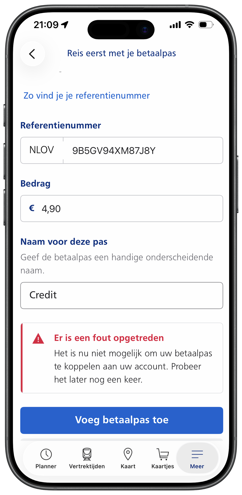
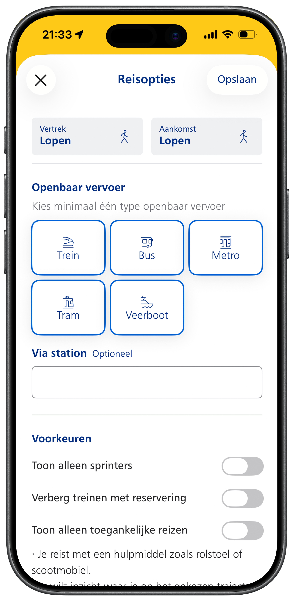
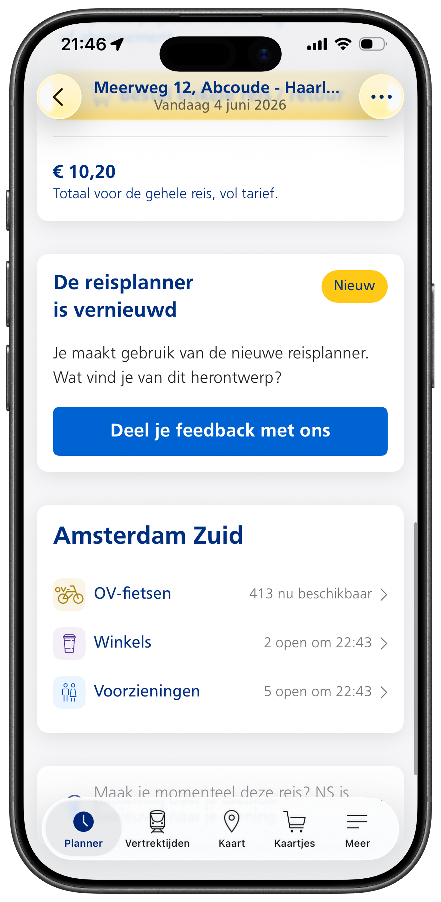
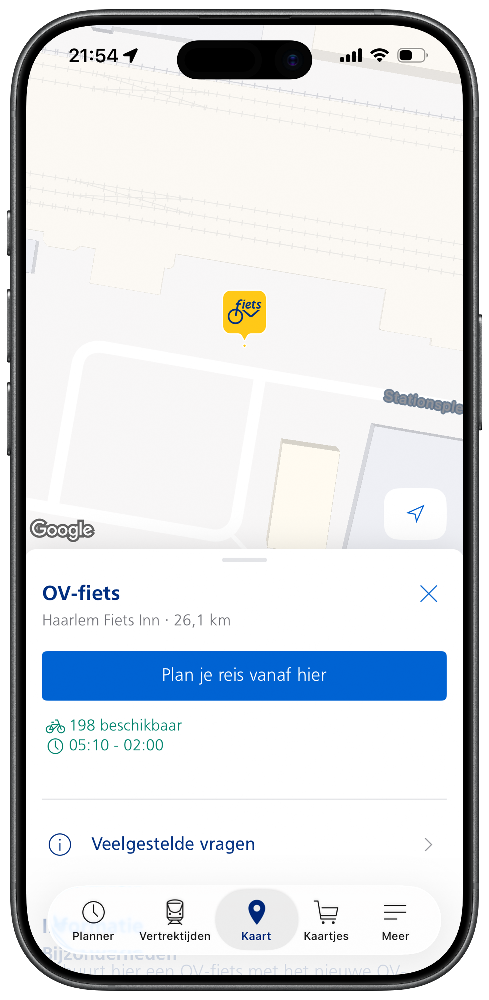

Een UX-analyse van de NS Reisplanner — van verborgen opties tot misleidende beschikbaarheidsinformatie.
Dirk downloadt de NS-app en wil zijn betaalpas koppelen om zijn ritten te kunnen inzien.
Hij vult het formulier in maar krijgt een vage foutmelding zonder uitleg. Het veld "Bedrag" blijkt het afgeschreven bedrag van zijn laatste reis te zijn — maar dat staat nergens uitgelegd.
Dirk plant zijn reis naar Haarlem en zoekt OV-fiets als aankomstoptie. Onder "Openbaar vervoer" staat geen OV-fiets. De optie zit verstopt onder "Aankomst: Lopen" — drie klikken diep.
De reis is gepland — maar zijn vraag blijft onbeantwoord: zijn er fietsen in Haarlem? De app toont "Amsterdam Zuid — 413 beschikbaar." Dat is niet zijn bestemming.
In Haarlem blijkt Dirk de OV-fiets niet te kunnen huren met zijn pinpas. Dit stond in kleine lettertjes — de app had hem hier nooit op gewezen.
Ook na de update blijven gebruikers klagen over onoverzichtelijkheid, onduidelijke informatie en overprikkeling door teveel kleur en visuele drukte. Het herontwerp loste de oppervlakte aan — maar de onderliggende UX-problemen zijn nog steeds aanwezig.
Bronnen: NS Jaarverslag 2024 · NS Community · App Store reviews
Problemen op zowel UX- als Interaction Design-vlak.




Bestaande app — NS app (iOS & Android), Reisplanner sectie.
Voeg hier wireframes of onderzoeksresultaten toe.